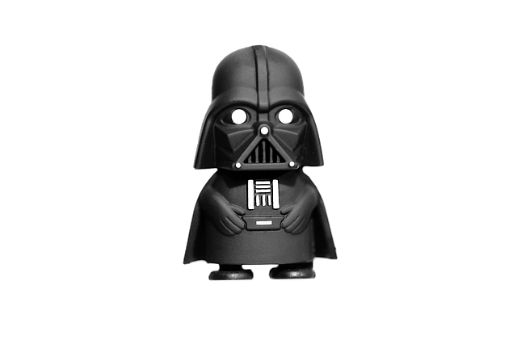

Nuestro lugar en el Universo
Si miras hacia el cielo, en una noche suficientemente clara, quizás puedas ver algo como lo que aparece en la fotografía. Igual que tú, hace mucho tiempo, otros vieron lo mismo. En muchas personas esta visión de las estrellas despertó su imaginación y les asignaron influencia sobre nosotros y pensaron que la disposición de los astros el día de nuestro nacimiento influiría en el resto de nuestra vida: ese fue el origen de la Astrología.
Caso práctico
Muchos científicos están convencidos de la existencia de vida extraterrestre y, sin embargo, consideran que los ovnis son pura invención o simple ilusión. ¿Es coherente creer en la existencia de vida extraterrestre y negar la existencia de ovnis? Justifica la respuesta.
Curiosidad
Si quieres probar el desafío de otro test, pincha en la siguiente imagen.

Reflexión
Distancias y escalas:
Si navegasemos en una nave espacial a la velocidad de la luz, llegariamos a la Luna en menos de 1 segundo, al Sol en 8 minutos y medio. Después de unas 5 horas abandonariamos el Sistema Solar. Pero tardariamos 4 años y 4 meses en llegar a Proxima Centauri, la estrella más cercana y tardariamos más de 20.000 años en abandonar la Vía Láctea. Por fin tras 2 millones de años llegariamos a la cercana galaxia de Andromeda.
¿Con estos datos, es correcto traducir el titulo de la serie de peliculas "Star Wars" como "La Guerra de las galaxias"?
